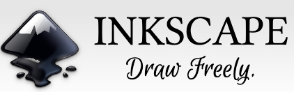
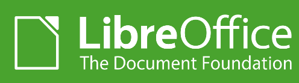

L1012-01: Software libre
A continuación se explica el concepto de software libre. Sin embargo, primero se debe repasar el concepto de software y sus tipos.
¿Qué es el software?
[1] “El software es un conjunto de programas, instrucciones y reglas informáticas que permiten ejecutar distintas tareas en una computadora. Se trata de las aplicaciones y sistemas que hacen posible que los usuarios puedan trabajar con un ordenador o dispositivo electrónico”.
Tipos de software
[1] El software tiene los siguientes tipos:
Software de sistema: Programas básicos que permiten que el hardware funcione (sistemas operativos, controladores).
Software de aplicación: Programas que realizan tareas específicas para los usuarios (procesadores de texto, navegadores web).
Clasificación de software
[2] El software se puede clasificar de la siguiente manera:
Software libre: Software que puede ser usado con libertad y de forma legal.
Software propietario: Software que puede ser usado con restricciones y de forma legal.
Software pirata: Software que es usado de forma ilegal (independiente si es usado con libertad o restricciones).
Software libre
[2] El software libre es un tipo de software que respeta la libertad de los usuarios y la comunidad. Los usuarios tienen la libertad de ejecutar, copiar, distribuir, estudiar, modificar y mejorar el software.
COLABORACIÓN
El software libre promueve la colaboración, la transparencia y el conocimiento compartido, permitiendo que las comunidades de desarrolladores y usuarios trabajen juntos para mejorar el software continuamente.
El software libre se caracteriza por:
Se centra en la libertad como un principio ético y filosófico.
Enfatiza las cuatro libertades fundamentales mencionadas anteriormente.
Impulsado por la Free Software Foundation (FSF).
Usa licencias que garantizan que las versiones modificadas también sean libres (Copyleft).
4 Libertades del software libre
[2] Las cuatro libertades esenciales del software libre son:
(Libertad 0): La libertad de ejecutar el programa como se desee, con cualquier propósito.
(Libertad 1): La libertad de estudiar cómo funciona el programa y cambiarlo para que haga lo que uno quiera. (El acceso al código fuente es una condición necesaria para ello).
(Libertad 2): La libertad de redistribuir copias para ayudar a otros.
(Libertad 3): La libertad de distribuir copias de sus versiones modificadas a terceros.
Estas libertades son esenciales, no opcionales. Un software es libre si otorga a los usuarios todas estas libertades de manera adecuada.
Ejemplos de software libre
A continuación se muestran algunos ejemplos del software libre:
Sistema Operativo GNU-LINUX ($0)

Logo GNU/Linux |
[3] GNU/Linux es un sistema operativo libre y de código abierto que combina el núcleo Linux con las herramientas del proyecto GNU.
GNU/Linux incluye las siguientes características:
Gratuito y libre para usar, modificar y distribuir.
Alta seguridad y estabilidad.
Gran variedad de distribuciones para diferentes necesidades (Ubuntu, Fedora, Debian, etc.).
Funciona en diversos dispositivos, desde computadores personales hasta servidores.
El sistema fue creado inicialmente por Linus Torvalds (kernel Linux) en conjunto con el proyecto GNU de Richard Stallman, y hoy es mantenido por una gran comunidad de desarrolladores en todo el mundo.
Navegador web Mozilla FIREFOX ($0)

Logo Navegador Mozilla Firefox |
[4] Mozilla Firefox es un navegador web de código abierto y gratuito que se caracteriza por:
Alta velocidad y rendimiento en la navegación.
Fuerte énfasis en la privacidad y seguridad del usuario.
Personalizable a través de extensiones y temas.
Compatible con los estándares web modernos.
Firefox es desarrollado por Mozilla Foundation, una organización sin fines de lucro que promueve una internet abierta y accesible para todos. El navegador representa una alternativa libre a opciones privativas como Google Chrome.
Editor de imágenes GIMP ($0)

Logo Gimp |
[5] GIMP (GNU Image Manipulation Program) es un editor de imágenes libre y de código abierto que ofrece:
Herramientas profesionales para edición y retoque de imágenes.
Soporte para múltiples formatos de archivo.
Capacidad de trabajar con capas y filtros.
Sistema de plugins para extender funcionalidades.
Es una alternativa gratuita a programas comerciales como Photoshop, siendo especialmente popular en la comunidad Linux aunque también está disponible para Windows y MacOS.
Editor de gráficos vectoriales INKSCAPE ($0)
 Logo Inkscape |
{kind=link}
[6] Inkscape es un editor de gráficos vectoriales libre y de código abierto que ofrece:
Creación y edición de gráficos vectoriales profesionales.
Compatible con estándares como SVG (Scalable Vector Graphics).
Herramientas avanzadas de dibujo y manipulación de formas.
Ideal para crear logotipos, ilustraciones y diseños escalables.
Es una alternativa gratuita a programas comerciales como Adobe Illustrator, permitiendo crear gráficos que mantienen su calidad sin importar el tamaño al que se escalen.
Reproductor multimedia VLC ($0)

Logo VLC |
[7] VLC Media Player es un reproductor multimedia libre y de código abierto que se caracteriza por:
Capacidad para reproducir casi cualquier formato de audio y video.
No requiere códecs adicionales para funcionar.
Permite streaming y conversión de archivos multimedia.
Funciona en múltiples sistemas operativos (Windows, Linux, Mac).
Desarrollado por VideoLAN Organization, VLC es uno de los reproductores más populares debido a su versatilidad y facilidad de uso. Es completamente gratuito y se mantiene actualizado por una comunidad activa de desarrolladores.
Suite de creación 3D BLENDER ($0)

Logo BLENDER |
[8] Blender es una suite de creación 3D de código abierto y gratuita que abarca todo el ciclo de producción digital. Permite realizar modelado, renderizado, animación, edición de video, composición y creación de efectos visuales (VFX).
Características principales:
Modelado y Esculpido: Herramientas avanzadas para crear formas complejas y personajes.
Animación y Rigging: Sistema profesional para dar movimiento a objetos y modelos orgánicos.
Motores de Renderizado: Incluye Cycles (trazado de rayos de alta fidelidad) y Eevee (renderizado en tiempo real).
Versatilidad: Al ser multiplataforma y ligero, es utilizado tanto por artistas independientes como por estudios de videojuegos y cine.
Edición de sonido Audacity ($0)

Logo Audacity |
[9] Audacity es un editor y grabador de audio digital de código abierto y gratuito, ampliamente utilizado para la producción de podcasts, edición de música y procesamiento de sonido. Audacity tiene las siguientes características:
Grabación multipista: Permite capturar audio en vivo a través de micrófonos o mezcladores.
Edición sencilla: Ofrece herramientas para cortar, copiar, pegar y mezclar sonidos con una interfaz intuitiva.
Procesamiento de efectos: Incluye funciones para reducción de ruido, ecualización, normalización y cambio de tono o velocidad.
Compatibilidad: Soporta diversos formatos de archivo como MP3, WAV, AIFF y Ogg Vorbis.
Suite ofimática Libreoffice ($0)
 LibreOffice |
{kind=link}
[10] LibreOffice es una suite ofimática libre y de código abierto que incluye:
Writer: Procesador de textos similar a Microsoft Word.
Calc: Hoja de cálculo comparable a Microsoft Excel.
Impress: Programa de presentaciones equivalente a PowerPoint.
Base: Gestor de bases de datos.
Draw: Editor de dibujos y diagramas.
Math: Editor de fórmulas matemáticas.
LibreOffice es completamente gratuito, compatible con los formatos de Microsoft Office y está disponible en múltiples idiomas. Es desarrollado por The Document Foundation y cuenta con una gran comunidad de usuarios y desarrolladores que lo mantienen actualizado constantemente.
Software propietariØ
[2] El software propietario, es aquel que no permite a los usuarios acceder, modificar o distribuir su código fuente. Los usuarios tienen restricciones legales y técnicas que les impiden ejercer las libertades que caracterizan al software libre.
Control total
El software propietario mantiene el control total sobre el programa en manos de su propietario, lo que puede limitar la libertad de elección y personalización por parte de los usuarios.
El software propietario se caracteriza por:
El código fuente no está disponible para los usuarios.
Prohibición de copiar, modificar o redistribuir el software.
Generalmente requiere el pago de licencias para su uso.
Las actualizaciones y mejoras dependen exclusivamente del propietario.
Ejemplos de software propietario
A continuación se muestran algunos ejemplos del software propietario:
Sistema operativo Microsoft Windows ($769,999)
Logo Microsoft Windows |
{kind=link}
[11] Microsoft Windows es el sistema operativo más utilizado en computadoras personales. Sus características principales incluyen:
Interfaz gráfica intuitiva y fácil de usar.
Amplia compatibilidad con hardware y software.
Actualizaciones regulares de seguridad y funcionalidad.
Gran variedad de aplicaciones disponibles.
Desarrollado por Microsoft Corporation, Windows es un software privativo que requiere la compra de una licencia para su uso legal. Desde su primera versión en 1985, ha evolucionado constantemente.
Microsoft Office (suite ofimática) ($459,999/año)

Microsoft Office |
[12] Microsoft Office es una suite de programas de oficina desarrollada por Microsoft que incluye:
Word: Procesador de textos para crear documentos.
Excel: Hoja de cálculo para análisis de datos y cálculos.
PowerPoint: Programa para crear presentaciones.
Outlook: Cliente de correo electrónico y calendario.
Access: Sistema de gestión de bases de datos.
Es una de las suites ofimáticas más utilizadas en el mundo empresarial y educativo. Requiere la compra de una licencia o suscripción para su uso legal, y está disponible tanto en versión de escritorio como en la nube (Microsoft 365).
Adobe Photoshop (editor de imágenes) ($48,971/mes)

Logo Adobe Photoshop |
[13] Adobe Photoshop es el software de edición de imágenes más popular y potente del mercado. Sus características principales incluyen:
Herramientas avanzadas para edición y manipulación de imágenes.
Trabajo con capas, máscaras y efectos profesionales.
Soporte para múltiples formatos de archivo.
Integración con otros productos de Adobe Creative Suite.
Herramientas de retoque fotográfico profesional.
Desarrollado por Adobe Inc., Photoshop es el estándar de la industria para el diseño gráfico, fotografía y arte digital. Requiere una suscripción mensual a través de Adobe Creative Cloud para su uso legal.
AutoCAD (software de diseño) ($2,201,999/año)

Logo Autodesk AutoCAD |
[14] AutoCAD es un software de diseño asistido por computadora (CAD) desarrollado por Autodesk. Sus características principales incluyen:
Diseño y dibujo técnico en 2D y 3D.
Herramientas precisas para arquitectura e ingeniería.
Creación de planos y modelos profesionales.
Amplia biblioteca de componentes y símbolos.
Capacidad de colaboración y compartir proyectos.
Es ampliamente utilizado en campos como la arquitectura, ingeniería, diseño industrial y construcción. AutoCAD es un software privativo que requiere una suscripción para su uso legal, siendo uno de los estándares de la industria para el diseño técnico profesional.
Software PIRATA!!!
“El software pirata se refiere a copias ilegales de programas informáticos que se distribuyen o utilizan sin la debida autorización de sus propietarios legales. Esta práctica viola los derechos de autor y la propiedad intelectual”.
[15] El software pirata se caracteriza por:
Se obtiene y distribuye sin pagar las licencias correspondientes.
Viola los derechos de autor y la propiedad intelectual.
Puede contener Malware por ejemplo:
Virus: impacta la integridad del sistema. Su objetivo es dañar.
Troyanos: impacta la confidencialidad del sistema. Su objetivo es hacerse pasar por un software confiable pero en realidad esta ejecutando acciones maliciosas.
No recibe actualizaciones oficiales ni soporte técnico.
Su uso puede resultar en problemas legales y sanciones.
ADVERTENCIA
El uso de software pirata es ilegal y puede tener consecuencias graves, incluyendo:
Multas y sanciones legales (CARCEL Y MULTAS MUY ALTAS).
Riesgos de seguridad informática (VIRUS, TROYANOS).
Pérdida de funcionalidades y actualizaciones (SOFTWARE A MEDIAS, POCO RENDIMIENTO).
Daños a la industria del software y su desarrollo (PERDIDAS ECONÓMICAS, DESPIDOS).